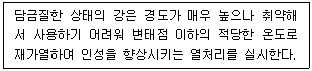

침투비파괴검사기사 (2022-04-24 기출문제)
1과목: 비파괴검사 개론
1. 다음 중 표피효과의 영향이 큰 비파괴검사 방법은?
- 침투비파괴시험
- 와전류비파괴시험
- 방사선비파괴시험
- 누설비파괴시험
(정답률: 63%)

2. 비파괴검사에 대한 설명으로 잘못된 것은?
- 비파괴검사는 모든 종류의 결함을 검출할 수 있다.
- 비파괴검사는 시험체를 파괴시키지 않고 원형을 보존하며 검사하는 방법을 말한다.
- 비파괴검사는 재료의 물리적 성질이 결함의 존재에 의하여 변화하는 현상을 이용한다.
- 비파괴검사는 제품의 사용 수명 내에 영향을 미치는 결함을 검출하고 제거함으로써 제품의 신뢰도를 높일 수 있다.
(정답률: 76%)
3. 탄소강 배관의 용접부 부근에 피로에 의한 내부 균열이 발생하였는데 균열의 정확한 깊이를 측정하고자 할 경우에 다음 중 가장 적절한 검사방법은?
- 감마선 투과검사법
- 중성자선 투과검사법
- 엑스선 투과검사법
- 초음파탐상검사법
(정답률: 70%)
4. 중성자투과시험에 이용되는 중성자빔의 발생원과 거리가 먼 것은?
- 원자로
- 입자가속기
- X선 발생기
- 방사성 동위원소
(정답률: 59%)
5. 고온의 전도성 시험체 내부에 대한 결함탐상시 비접촉 방법으로 가장 좋은 비파괴검사 방식은?
- 초음파탐상(Ultrasonic test)
- 전자초음파탐상(Electro magnetic Ultrasonic test)
- 와전류탐상(Eddy current test)
- 음향방출시험(Acoustic emission test)
(정답률: 48%)
6. 합금강의 불꽃시험에서 합금원소에 의한 불꽃특징으로 국화꽃 모양을 나타내며 탄소파열을 조장하는 원소는?
- W
- Cr
- Ni
- Si
(정답률: 57%)
7. 쾌삭황동에 대한 설명으로 옳은 것은?
- 황동에 Sn을 넣어 내열성을 개선한 것이다.
- 황동에 Sn을 넣어 전연성을 개선한 것이다.
- 황동에 Al을 넣어 내해수성을 개선한 것이다.
- 황동에 Pb을 넣어 절삭성을 개선한 것이다.
(정답률: 68%)
8. 철광석 원료 중 Fe2O3만으로 구성된 철광석은?
- 자철광
- 갈철광
- 능철광
- 적철광
(정답률: 68%)
9. 텅스텐계 고속도 공구강에 대한 설명으로 옳은 것은?
- 조성은 Fe-18%W-4%Mo-1%V 이다.
- W은 고온에서 결정립 조대화에 기여한다.
- W와 C 사이에 생성된 W6C는 내마모성을 높인다.
- V는 금속 내 산소와 결합하여 산화물 형성을 통해 내열성을 높인다.
(정답률: 64%)
10. 분말야금에서 분말의 유동도에 대한 설명으로 틀린 것은?
- 성형 다이의 설계 시 분말의 유동도를 고려해야 한다.
- 분말의 유동도가 높으면 제품의 생산성이 떨어진다.
- 분말의 유동도가 높으면 제품의 특성이 균일해진다.
- 각진 형태의 제품이 둥근 형태의 제품보다 분말의 유동도가 중요시 된다.
(정답률: 63%)
11. 내식성 Al합금에 대한 설명 중 틀린 것은?
- 라우탈 합금은 Al-Cr-Mo계 합금이다.
- 하이드로날륨 합금은 Al-Mg계 합금이다.
- 알드레이 합금은 알루미늄에 Mg, Si 이 첨가된 합금이다.
- 알클래드는 고강도 Al합금 표면에 순 Al 또는 내식성 Al합금을 피복한 합금판재이다.
(정답률: 46%)
12. 다음 중 알루미늄 합금이 아닌 것은?
- 톰백
- 실루민
- Lo-Ex 합금
- 두랄루민
(정답률: 63%)
13. Sn을 10% 이내로 포함하고 내식성과 내마모성이 우수하여 기계주물이나 미술공예품으로 사용하는 Cu-Sn 합금은?
- 양백
- 주석청동
- 함석황동
- 고강도황동
(정답률: 71%)
14. 피로한도에 대한 설명으로 옳은 것은?
- 지름이 크면 피로한도는 커진다.
- 노치가 있는 시험편의 피로한도는 크다.
- 표면이 거친 것이 고운 것보다 피로한도가 작다.
- 산, 알칼리, 물에서 부식된 시험편의 피로한도는 전보다 크다.
(정답률: 52%)
15. 다음에 설명하는 열처리 방법은?

- 뜨임
- 어닐링
- 카보나이징
- 노멀라이징
(정답률: 65%)
16. 피닝법(Peening method)의 목적이 아닌 것은?
- 용접부 경화
- 용접변형 경감
- 잔류응력 완화
- 용착금속 균열방지
(정답률: 52%)
17. TIG 용접으로 판 두께 3mm의 알루미늄 판을 용접하려고 할 때 용접 전원으로 가장 적합한 것은?
- ACHF(고주파 교류)
- DCRP(직류 역극성)
- DCSP(직류 정극성)
- 전원이 필요 없음
(정답률: 49%)
18. 피복 아크 용접에서 판재를 맞대기 이음오로 용접할 경우, 다음 중 가장 두꺼운 판재에 적용할 수 있는 흠은?
- I형
- H형
- V형
- K형
(정답률: 55%)
19. 피복 아크 용접봉에서 피복제의 주요역할이 아닌 것은?
- 용융 금속의 용적을 미세화하여 용착효율을 높인다.
- 아크를 안정시키고 용착금속에 필요한 합금원소를 첨가한다.
- 용착금속의 탈산 정련작용을 한다.
- 피복제는 전기를 잘 통하게 한다.
(정답률: 66%)
20. 정격 사용률 50%, 정격 2차 전류 300A인 아크 용접기를 실제로 200A로 용접할 때 허용사용률은 약 몇 % 인가?
- 50.5
- 56
- 112.5
- 150
(정답률: 59%)
2과목: 침투탐상검사 원리
21. 침투탐상검사에서 침투액의 가장 중요한 성질은?
- 높은 점도
- 적심성
- 화학적 불활성
- 높은 비중
(정답률: 73%)
22. 침투탐상검사에서 사용되는 용어에 대한 정의가 틀린 것은?
- 침투제 : 일반적으로 액체이며 결함지시모양을 만들기 위해 결함내부로 침투하는 유체
- 유화제 : 침투제와 혼합한 후 물로 표면을 세척할 수 있도록 시험체 표면에 침투제 위에 적용하는 액체
- 형광 침투제 : 결함지시모양의 가시성을 증대시키기 위해 형광염료를 혼합한 침투액
- 염색 침투제 : 자외선등 아래에서 결함지시모양의 가시성을 위해 명암도가 강한 염료를 혼합한 침투제
(정답률: 63%)
23. 형광침투탐상제는 특정 파장의 자외선에 민감하게 반응하는데 그 파장은?
- 550nm
- 450nm
- 350nm
- 250nm
(정답률: 54%)
24. 자외선조사장치에서 형광지시 모양의 식별성을 가장 나쁘게 하는 파장은?
- 250nm
- 300nm
- 350nm
- 450nm
(정답률: 44%)
25. 자외선조사장치의 이용에 관한 설명으로 틀린 것은?
- 자외선 필터는 검사에 적절한 파장의 자외선을 통과시킨다.
- 일반광선은 눈에 해를 주게 되므로 일정한 간격으로 휴식을 취하여야 한다.
- 주변의 일반광선이 들어오지 않도록 암실에서 검사한다.
- 지시는 황록색을 나타내므로 식별이 쉽다.
(정답률: 60%)
26. 침투탐상검사에서 모세관현상과 관련이 없는 것은?
- 밀도
- 접촉각
- 전단응력
- 표면장력
(정답률: 61%)
27. 침투탐상검사에서 온도의 영향이 가장 적은 것은?
- 표면장력
- 침투액의 밀도
- 접촉각
- 점성
(정답률: 38%)
28. 후유화성 침투탐상검사에서 시험체의 표면거칠기, 유화제 침투액의 종류에 따라 유화시간이 변화되므로 적절한 유화시간을 결정하는데 올바른 것은?
- 다른 요소와는 관계없이 5분 이내로 한다.
- 제조회사의 권고 시간만 따른다.
- 사전에 예비 실험을 통하여 그 조건을 설정한다.
- 시험품의 표면온도에 따라 결정한다.
(정답률: 63%)
29. 침투탐상검사에서 사용하는 탐상제가 아닌 것은?
- 정지액
- 세척액
- 제거액
- 현상제
(정답률: 66%)
30. 침투탐상검사에서 관찰 조건으로 가장 적합하지 않은 것은?
- 반사광이 눈에 비치는 것은 관찰하는데 도움이 된다.
- 관찰 각도는 수직에 가까울수록 좋다.
- 눈과 광원과의 배치관계가 중요하다.
- 관찰면에서 60cm 이상 떨어져서는 안 된다.
(정답률: 66%)
31. 침투탐상검사에서 시험체와 침투액의 온도가 높아질 때에 발생하는 현상으로 올바른 것은?
- 적심속도가 느려져 침투속도가 느려진다.
- 접촉각은 커지고 모세관 현상은 감소한다.
- 액체의 표면장력이 점성과 함께 증가한다.
- 액체의 표면장력이 점성과 함께 감소한다.
(정답률: 57%)
32. 현상제를 사용하는 현상법에 비해 현상제를 사용하지 않는 무현상법 침투탐상검사의 특징으로 옳은 것은?
- 결함 검출 능력이 낮다.
- 지시모양이 잘 나타난다.
- 저감도 침투액과 혼합 사용한다.
- 염색침투탐상에 적용한다.
(정답률: 60%)
33. 우리 눈이 물체의 형태, 색깔 및 크기를 감지하는 현상을 무엇이라 하는가?
- 지각현상
- 형광현상
- 적심현상
- 편광현상
(정답률: 64%)
34. 후유화성 침투탐상검사의 유화시간에 대해 바르게 설명한 것은?
- 가능한 한 시간이 길면 길수록 좋다.
- 짧은 시간으로 적용 시 탐상에 큰 영향을 미치지는 않는다.
- 중요한 인자로서 탐상결과에 크게 영향을 미친다.
- 탐상 표면에 잔존하는 유화제와 과잉침투제의 세척에 소요되는 시간이다.
(정답률: 59%)
35. 침투탐상검사에서 여러 개의 흩어진 점지시 모양으로 나타나는 결함은?
- 깊고 큰 균열
- 얕고 가는 균열
- 융합불량
- 주물에서의 표면기공
(정답률: 67%)
36. 침투탐상검사에서 부적절한 세척과정에 의해 검출이 가장 어려운 결함은?
- 표면 균열
- 앝고 넓게 퍼진 결함
- 단조 겹침
- 크레이터 균열
(정답률: 50%)
37. 물속에 기름이 미세입자가 되어 분산되는 현상은?
- 유효현상
- 유화현상
- 유탁현상
- 유전현상
(정답률: 60%)
38. 침투탐상검사에서 침투시간을 결정할 때 고려해야 할 사항으로 틀린 것은?
- 예상 결함의 크기
- 사용하는 유화제의 종류
- 시험체의 온도
- 시험체의 재질
(정답률: 32%)
39. 침투탐상검사에서 전처리에 사용되는 재료로 거리가 먼 것은?
- 윤활유
- 물
- 계면활성제를 첨가한 세척수
- 유기용제
(정답률: 53%)
40. 침투탐상검사에서 침투제의 성능을 평가하는 방법으로 옳은 것은?
- 비중을 측정하기 위해 비중계를 사용한다.
- 균열이 존재하는 검사체를 사용한다.
- 접촉각을 측정한다.
- 대비시험편을 사용한다.
(정답률: 67%)
3과목: 침투탐상검사 시험
41. 침투탐상검사에서 대비시험편을 사용 후 남아있는 잔유물을 제거할 때 사용해선 안되는 방법은?
- 산세척
- 증기세척
- 유기용제 세척
- 초음파세척
(정답률: 63%)
42. 압력용기 용접부에 대한 침투탐상검사의 설명으로 잘못된 것은?
- 무관련지시는 동일 방법으로 재검사한다.
- 용접보수 후 예리한 노치, 갈라진 곳 또는 모서리 부분이 생기지 않도록 보수부분 주위를 매끄럽게 가공한다.
- 용접보수부위는 원칙적으로 재검사 또는 다른 비파괴검사법으로 재검사한다.
- 불건전부는 보수하여 합격기준 이내의 크기로 감소되었는지를 육안검사로 확인한다.
(정답률: 57%)
43. 대형 강구조물의 침투탐상검사 시 용접부 검사에 가장 적합한 것은?
- 수세성 염색침투탐상검사
- 수세성 형광침투탐상검사
- 휴유화성 형광침투탐상검사
- 용제제거성 염색침투탐상검사
(정답률: 53%)
44. 비교적 시험체의 표면 거칠기가 거친 것에 적합한 방법으로, 소형의 다량 부품이나 나사부와 같은 복잡한 형상의 시험체를 탐상할 수 있는 방법은?
- 수세성 형광 침투탐상검사
- 용제제거성 염색 침투탐상검사
- 휴유화성 형광 침투탐상검사
- 용제제거성 형광 침투탐상검사
(정답률: 57%)
45. 침투제료 중에서 속건식현상제에 포함된 솔벤트의 증기압이 높다면 이것은 무엇을 의미하는가?
- 증발성이 높다.
- 증발성이 낮다.
- 침투성이 높다.
- 침투성이 낮다.
(정답률: 66%)
46. 침투탐상검사를 할 때 안전관리상 주의할 사항 중 옳지 않은 것은?
- 형광침투탐상 시 적절한 필터를 사용하여 불필요한 광선을 걸러낸다.
- 뚜껑 없는 용기에 담아 사용하는 침투액은 인화점이 보통 120°F 이하의 것을 요구한다.
- 피부의 자극을 막기 위해 앞치마, 장갑 등을 사용하여 필요 없는 접촉을 피한다.
- 건식현상제나 침투액의 증기가 있는 제한된 구역에는 환기를 시키는 팬을 설치한다.
(정답률: 65%)
47. 용제제거성 형광침투제로 탐상할 때 솔벤트 세척제의 역할로 옳은 것은?
- 결함에서 침투제를 제거한다.
- 침투제의 유화속도를 증가시킨다.
- 시험체 표면의 잉여 침투액을 제거한다.
- 시험품 표면의 침투제를 수세성으로 변화시킨다.
(정답률: 62%)
48. 단강품에 발생되는 결함으로 Ni, Cr, Mo 등을 포함한 특수강의 파단면에 미세균열이 발견되며, 그 파면이 은백색을 갖는 결함은?
- 백점
- 고온균열
- 편석
- 라미네이션
(정답률: 59%)
49. 다공질 재료나 세라믹 제품의 표면에 축적된 미립자에 의해 형성된 지시모양으로 결함의 존재 유무를 알 수 있는 침투탐상검사법은?
- 역형광법
- 하전입자법
- 여과입자법
- 기체 방사성 동위원소법
(정답률: 55%)
50. 불연속에 의하지 않은 의사지시모양이 생기는 원인으로 가장 부적절한 것은?
- 제거처리 부적당
- 전처리 부적당
- 현상처리의 부적당
- 외부 원인에 의한 오염
(정답률: 45%)
51. 다음 중 침투탐상검사에서 침투액의 침투성능을 결정하는 가장 중요한 요소는?
- 비중
- 상대밀도
- 화학적 불활성
- 표면장력 및 적심성
(정답률: 69%)
52. 수세성형광침투액과 건식현상제를 적용하여 침투탐상할대 자외선등의 설치가 반드시 필요한 과정은?
- 침투처리과정, 관찰과정
- 침투처리과정, 세척처리과정
- 세척처리과정, 건조과정
- 세척처리과정, 관찰과정
(정답률: 55%)
53. 침투탐상검사에 사용되는 침투액의 특성에 관한 사항 중 틀린 것은?
- 침투성이 좋아야 한다.
- 세척성이 좋아야 한다.
- 인화점이 높아야 한다.
- 휘발성이 높아야 한다.
(정답률: 63%)
54. 침투탐상검사에서 결함의 관찰 중 주의하여야 하는 의사지시의 원인이 아닌 것은?
- 리벳이음부 나사산의 지시
- 표면에 붙은 산화 스케일
- 기계적 불연속 지시
- 다공성 재료의 지시
(정답률: 43%)
55. 침투탐상검사에서 과잉 세척처리로 인하여 일반적으로 빠트리기 쉬운 불연속은 어느 것인가?
- 담금질로 겹친 홈
- 얇고 넓은 불연속
- 세척은 불연속부 발견에 영향을 주지 않음
- 깊은 구멍
(정답률: 59%)
56. 다음 중 유화처리 시 침투시간이 경과된 후에 유화제를 적용하는 방법으로 틀린 것은?
- 침적
- 분무
- 붓칠
- 흘림
(정답률: 52%)
57. 수세성 침투탐상검사에서 현상법에 따른 건조처리의 순서를 옳게 나타낸 것은?
- 건식 현상법 – 현상처리 후에 건조처리
- 습식 현상법 – 세척처리 후에 건조처리
- 속건식 현상법 – 현상처리 후에 건조처리
- 무현상법 – 세척처리 후에 건조처리
(정답률: 40%)
58. 침투탐상검사의 현상방법 중 기호 E가 나타내는 것은?
- 건식 현상법
- 습식 현상법
- 무 현상법
- 특수 현상법
(정답률: 60%)
59. 표면에 오염물질이 존재함에도 불구하고 침투액막이 균일하고 일정하게 전 표면에 형성되도록 해줄 수 있는 침투액의 기능은?
- 낮은 증발효과
- 높은 점성
- 큰 적심능력
- 높은 밀도
(정답률: 65%)
60. 침투탐상검사에 적용하는 탐상제의 사용기구 중 에어로졸제품의 일반적인 내부 압력으로 옳은 것은?
- 20℃에서 100~200kPa
- 25℃에서 200~300kPa
- 20℃에서 200~300kPa
- 25℃에서 290~490kPa
(정답률: 32%)
4과목: 침투탐상검사 규격
61. 침투탐상검사 방법 및 침투 지시의 분류(KS B 0816)에서 침투탐상검사 시 침투 시간이 다른 형태의 흠집은?
- 콜드셧(cold shut)
- 겹침(Lap)
- 기공
- 융합 불량
(정답률: 48%)
62. 침투탐상검사 방법 및 침투 지시의 분류(KS B 0816)에 따른 유화 처리에 관한 사항 중 틀린 것은?
- 유화제는 침지, 붓기, 분무, 붓칠의 방법으로 적용한다.
- 유화시간은 유화제 및 침투액의 종류, 온도 등을 고려하여 정한다.
- 수성 유화제를 사용할 때는 유화 처리에 앞서 배액을 목적으로 물 분무로 예비 세척을 한다.
- 유화시간 경과 후 필요에 따라 물 분무 또는 물속에 침지하여 유화 정지를 한다.
(정답률: 50%)
63. 보일러 및 압력용기에 대한 침투탐상검사(ASME Sec.V Art.6)에서 과잉의 수세성 침투제를 물 분사기로 제거할 때 수압과 수온으로 적당한 것은?
- 수압은 30 psi, 수온은 40℃를 초과할 수 없다.
- 수압은 50 psi, 수온은 43℃를 초과할 수 없다.
- 수압은 70 psi, 수온은 46℃를 초과할 수 없다.
- 수압은 90 psi, 수온은 49℃를 초과할 수 없다.
(정답률: 53%)
64. 보일러 및 압력용기에 대한 표준침투탐상검사(ASME Sec.V Art.24 SD-808)에서 염소 이온 농도를 계사하는 식은? (단, P : 시료에서 얻어진 AgCl의 값[g], B : 블랭크에서 얻어진 AgCl의 값[g], W : 사용된 시료의 무게[g]이다.)
- 염소, 중량 % = (P-B)×24.74/W
- 염소, 중량 % = (B-P)×24.74/W
- 염소, 중량 % = (P-B)×W/24.74
- 염소, 중량 % = (B-P)×W/24.74
(정답률: 44%)
65. 침투탐상검사 방법 및 침투 지시의 분류(KS B 0816)에 따라 침투탐상검사를 할 때 용제제거성 침투액의 제거 방법은?
- 물로 제거한다.
- 기계유로 제거한다.
- 세척액으로 제거한다.
- 유화제로 제거한다.
(정답률: 62%)
66. 보일러 및 압력용기에 대한 표준침투탐상검사(ASME Sec.V Art.24 SE-165)에 의한 전처리 과정에서 녹이나 무기물을 제거하기에 가장 적합한 세척법은?
- 증기 세척
- 초음파 세척
- 세제 세척
- 유기용제 세척
(정답률: 40%)
67. 보일러 및 압력용기에 대한 침투탐상검사(ASME Sec.V Art.6)에서 표준온도 범위 내에서 검사를 수행할 수 없을 때 사용하는 비교시험편의 두께와 재질로 옳은 것은?
- 10mm, 알루미늄
- 15mm, 알루미늄
- 20mm, 스테인리스강
- 25mm, 스테인리스강
(정답률: 47%)
68. 침투탐상검사 방법 및 침투 지시의 분류(KS B 0816)에 의해 모든 검사를 수행하고 난 후 검사 보고서를 작성하고자 한다. 검사 대상체의 정보에 대하여 기록할 내용으로 가장 거리가 먼 것은?
- 재질
- 표면 사항
- 무게
- 모양·치수
(정답률: 67%)
69. 침투탐상검사 방법 및 침투 지시의 분류(KS B 0816)에 따른 A형 대비시험편에 관한 설명으로 옳은 것은?
- 열처리로에 넣고 골고루 520℃에서 530℃로 가열한다.
- 대비시험편은 PT-A의 기호로 표시한다.
- 분젠버너로 가열하기 전에 중앙부의 홈을 가공한다.
- 가열 후 공기를 주입하여 냉각시킨다.
(정답률: 55%)
70. 보일러 및 압력용기에 대한 침투탐상검사(ASME Sec.V Art.6)에 규정된 유화처리 후의 혼합물 제거 방법은?
- 담금(Immersing) 또는 붓기(Flooding)
- 담금(Immersing) 또는 분무(Spraying)
- 담금(Immersing) 또는 씻기(Rinsing)
- 담금(Immersing) 또는 솔질(Brushing)
(정답률: 34%)
71. 침투탐상검사 방법 및 침투 지시의 분류(KS B 0816)에서 후유화성 형광 침투액(수성 유화제)에 무현상법으로 검사할 경우 기호 표시가 옳은 것은?
- FD-S
- VD-S
- FD-N
- VD-W
(정답률: 62%)
72. 보일러 및 압력용기에 대한 침투탐상검사(ASME Sec.V Art.6)에서 침투액 중 유황 함량 측정을 필요로 하는 시험체의 재질은?
- 니켈 합금
- 타이타늄 합금
- 알루미늄 합금
- 스테인리스강
(정답률: 47%)
73. 침투탐상검사 방법 및 침투 지시의 분류(KS B 0816)에서 FA-D일 때의 검사 과정으로 맞는 것은?
- 전처리 → 침투처리 → 세척처리 → 현상처리 → 건조처리 → 관찰 → 후처리
- 전처리 → 침투처리 → 세척처리 → 건조처리 → 현상처리 → 관찰 → 후처리
- 전처리 → 침투처리 → 세척처리 → 건조처리 → 관찰 → 후처리
- 전처리 → 침투처리 → 제거처리 → 건조처리 → 현상처리 → 관찰 → 후처리
(정답률: 59%)
74. 침투탐상검사 방법 및 침투 지시의 분류(KS B 0816)에서 특별한 규정이 없는 한 형광침투액을 제거하기 위한 수온 범위는?
- 20℃ ~ 60℃
- 15℃ ~ 50℃
- 10℃ ~ 40℃
- 5℃ ~ 30℃
(정답률: 40%)
75. 보일러 및 압력용기에 대한 표준침투탐상검사(ASME Sec.V Art.24 SE-165)에 따라 유성유화제 적용에 대한 설명 중 틀린 것은?
- 세척시 수압은 40 psi 이하이다.
- 물-공기 분무기의 경우 공기압은 25 psi 이하이다.
- 물의 온도는 40℃ 이상을 유지한다.
- 유화제를 적용할 때, 분무, 붓칠 방법은 적용하지 않는다.
(정답률: 61%)
76. 침투탐상검사 방법 및 침투 지시의 분류(KS B 0816)에서 침투탐상검사 과정으로 옳은 것은?
- 전처리 → 침투처리 → 현상처리 → 관찰
- 전처리 → 현상처리 → 침투처리 → 기록
- 시험 준비 → 침투처리 → 전처리 → 관찰
- 시험 준비 → 현상처리 → 침투처리 → 기록
(정답률: 69%)
77. 침투탐상검사 방법 및 침투 지시의 분류(KS B 0816)에 의해 침투탐상검사 결과, 4개의 선상 흠집이 동일 선상에서 상호간 거리가 모두 1.5mm씩 떨어져 연속해서 존재하고 있다. 2개의 흠집 길이는 각각 5mm이고, 다른 2개는 각각 3mm일 때 지시의 분류는?
- 4개의 독립된 선상 침투 지시
- 연속 침투 지시 16mm
- 선상 침투 지시 16mm
- 연속 침투 지시 20.5mm
(정답률: 54%)
78. 침투탐상검사 방법 및 침투 지시의 분류(KS B 0816)에 따라 독립 침투 지시로 분류되지 않는 것은?
- 균열에 의한 침투 지시
- 선상 침투 지시
- 원형상 침투 지시
- 분산 침투 지시
(정답률: 61%)
79. 침투탐상검사 방법 및 침투 지시의 분류(KS B 0816)에 따른 현상 처리 방법을 바르게 설명한 것은?
- 건식 현상제는 검사면 전체를 균일하게 덮이도록 하고 소정의 시간을 유지한다.
- 속건식 현상제의 적용은 침지법으로 한다.
- 습식 현상제는 적용 후에 천천히 배액하여 건조처리를 한다.
- 습식 및 속건식 현상제를 적용하는 경우는 검사 표면이 완전히 보이지 않을 정도로 한다.
(정답률: 48%)
80. 침투탐상검사 방법 및 침투 지시의 분류(KS B 0816)에 규정하는 B형 대비시험편 중 도금 균열의 폭이 가장 큰 것은?
- PT-B50
- PT-B30
- PT-B20
- PT-B10
(정답률: 59%)